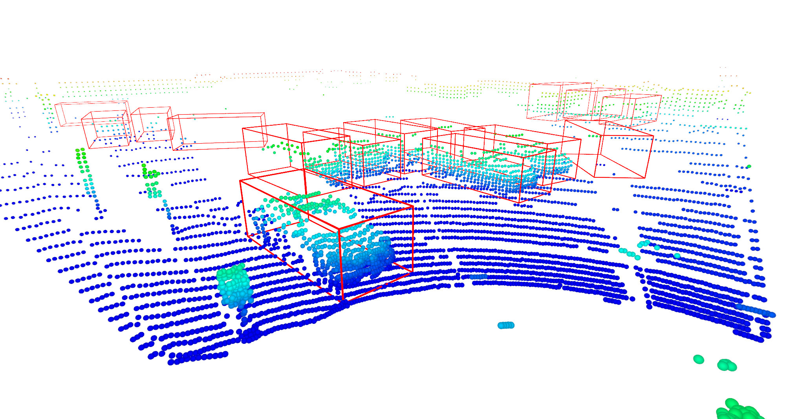
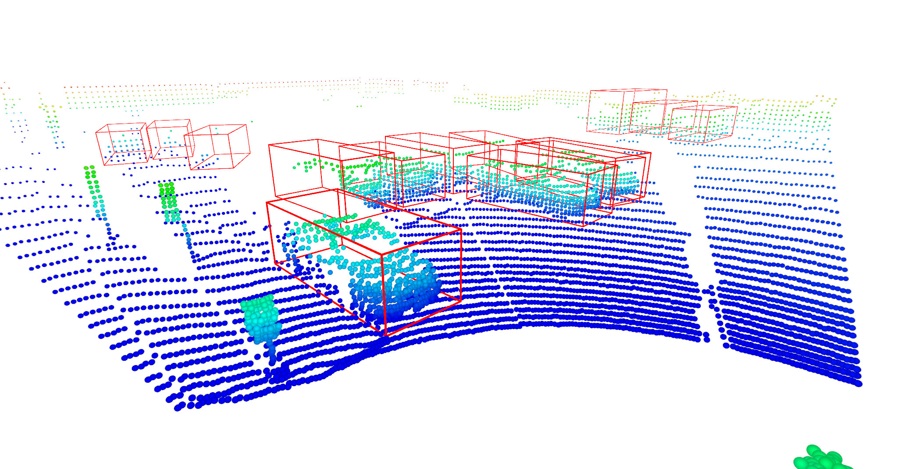
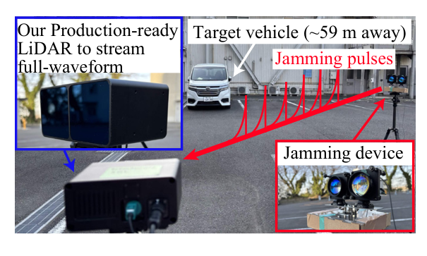
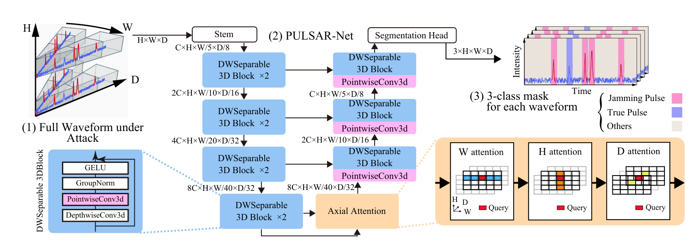

PULSAR-Net: Neural Reconstruction of LiDAR Point Clouds under Jamming Attacks via Full-Waveform Representation and Simultaneous Laser Sensing
NeurIPS 2026Abstract
LiDAR sensors are critical for autonomous driving perception, yet remain vulnerable to spoofing attacks. Jamming attacks inject high-frequency laser pulses that completely blind LiDAR sensors by overwhelming authentic returns with malicious signals. We discover that while point clouds become randomized, the underlying full-waveform data retains distinguishable signatures between attack and legitimate signals.
In this work, we propose PULSAR-Net, capable of reconstructing authentic point clouds under jamming attacks by leveraging previously underutilized intermediate full-waveform representations and simultaneous laser sensing in modern LiDAR systems. PULSAR-Net adopts a novel U-Net architecture with axial spatial attention mechanisms specifically designed to identify attack-induced signals from authentic object returns in the full-waveform representation. To address the lack of full-waveform representations in existing LiDAR datasets under jamming attacks, we introduce a physics-aware dataset generation pipeline that synthesizes realistic full-waveform representations under jamming attacks. Despite being trained exclusively on synthetic data, PULSAR-Net achieves reconstruction rates of 92% and 73% for vehicles obscured by jamming attacks in real-world static and driving scenarios, respectively.
Demo on a Real LiDAR Under Attack
A production-ready full-waveform LiDAR, developed with a major LiDAR manufacturer, attacked with the state-of-the-art HFR jamming attack. PULSAR-Net is trained only on synthetic nuScenes-J, with no fine-tuning for this LiDAR.
Demo video. PULSAR-Net against a real LiDAR jamming attack in driving and static scenarios, with CenterPoint detections overlaid. The target vehicle disappears from the jammed point cloud in every frame, and PULSAR-Net recovers it.


No Attack PULSAR-NetLeft: No Attack / Under Attack (alternating) | Right: PULSAR-Net Reconstruction
Hover or drag to move the slider yourself.

Experimental setup. Our production-ready full-waveform LiDAR, a target vehicle about 59 m away, and the jamming device.
| Detector | Static (4 scenarios) | Driving (3 scenarios) | |||
|---|---|---|---|---|---|
| No Attack | No Defense | Ours | No Defense | Ours | |
| PointPillars | 49.7 | 0.10 | 49.8 | 0.70 | 50.7 |
| CenterPoint | 67.1 | 0.00 | 69.4 | 0.20 | 63.1 |
| PV-RCNN | 44.0 | 0.00 | 49.8 | 0.00 | 53.8 |
- Static scenarios. Jamming collapses detection to mAP ≈ 0. PULSAR-Net restores it to the no-attack level or slightly above, and reconstructs 91.7% of the vehicles erased by the attack (CenterPoint, IoU 0.4).
- Driving scenarios (up to 30.5 km/h). PULSAR-Net recovers 50.7 / 63.1 / 53.8 mAP from near zero and reconstructs 73.2% of erased vehicles, showing that the reconstruction keeps enough geometric cues even under motion.
Contributions
- PULSAR-Net (Point cloud Un-jamming via LiDAR Signal Adaptive Reconstruction), the first successful defense against jamming attacks on LiDAR systems: a U-Net-based architecture with axial spatial attention designed for attack-signal segmentation in the full-waveform representation.
- A physics-based synthesis pipeline that generates realistic full-waveform data under jamming attacks from existing point cloud datasets (KITTI-J and nuScenes-J).
- A recovery rate of ≥82% of points obscured by jamming on our synthetic benchmarks, an ≥2-fold improvement over a naive baseline.
- Integration into a production-ready LiDAR with full-waveform access, developed with a major supplier. Trained solely on simulated data, PULSAR-Net reconstructs 92% and 73% of erased vehicles in real-world static and driving scenarios.
Key Insight: The Legitimate Echo Is Still There
A LiDAR records a waveform (received intensity over time) for every laser shot and keeps only its strongest peak as the point. Jamming hides the real echo behind stronger attack pulses, but does not remove it from the waveform.
The only peak is the echo, so the measured distance is correct.
Stronger attack pulses win peak detection and the point lands at a random distance. The echo is still in the waveform.
The jammer’s wide beam hits all receivers at once, so attack pulses line up. Echoes depend on each object and do not.
Peak detection on the cleaned waveform finds the echo again, restoring the correct point.
PULSAR-Net

A U-Net with depthwise-separable 3D convolutions and axial attention labels every waveform sample as attack pulse, legitimate echo, or background. Removing the attack pulses and running peak detection again gives the reconstructed point cloud. Training data is synthesized from KITTI and nuScenes with a physics-aware jamming simulation. See the paper for details.
Results on KITTI-J and nuScenes-J
| Method | Point-level accuracy (%) | Detection mAP | ||
|---|---|---|---|---|
| nuScenes-J | KITTI-J | nuScenes-J PointPillars | KITTI-J PV-RCNN |
|
| No Defense | 3.39 | 2.82 | 0.00 | 0.00 |
| Naive Avg. Sub. | 32.60 | 35.21 | 2.56 | 32.94 |
| Neural DSP (ICCV 2025) | 47.84 | 13.44 | 37.70 | 1.43 |
| Ours | 86.32 | 89.44 | 65.52 | 55.74 |
| No Attack (reference) | – | – | 69.87 | 62.75 |
Acknowledgements
We gratefully acknowledge Takahiro Kado, Ibuki Fujioka, and Taro Beppu at Sony Semiconductor Solutions for their generous support and for providing the Sony LiDAR sensor used in this work. The Sony LiDAR system played an essential role in enabling this research.
BibTeX
@inproceedings{yoshida2026pulsarnet,
author = {Yoshida, Ryo and Sato, Takami and Zhang, Wenlun and Hayakawa, Yuki and Nagai, Shota and Yoshioka, Kentaro},
title = {Neural Reconstruction of {LiDAR} Point Clouds under Jamming Attacks via Full-Waveform Representation and Simultaneous Laser Sensing},
booktitle = {Advances in Neural Information Processing Systems (NeurIPS)},
year = {2026}
}